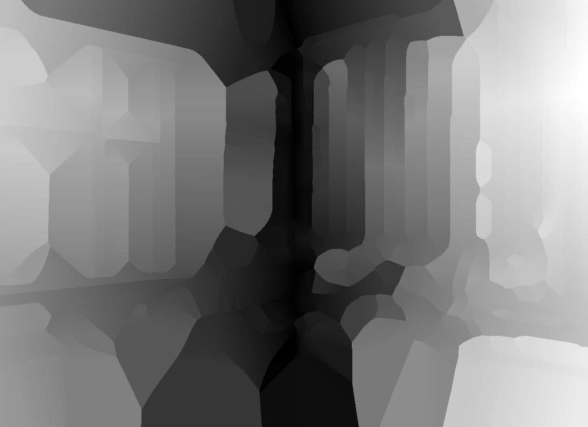

01
Discovery
Residence, goals, priorities, lifestyle, and scope



CI Core
CI Core
It is the foundation of our integrated model,
created for clients who want a thoughtful, highly
coordinated transformation of the built environment without
requiring CI to manage every layer beyond construction

Is CI Core Right for You?
CI Core may be the right fit if:
A Connected
Design-Build Scope
Project scope may include:
Existing-condition assessmentArchitectural planningInterior architectureInterior designSpace planningMaterial and finish selectionsLighting design coordinationMillwork and cabinetry designKitchen and bathroom designConstruction planningEstimating and budgeting coordinationGeneral constructionProject managementTrade coordinationInstallation oversightQuality controlFinal construction detailing


What You Receive
CI Core eliminates one of the largest sources of friction in residential renovation: the disconnect between the people designing the work and the people responsible for building it
Instead, decisions are developed with both intent and execution in mind
Design understands construction
Construction understands design
You gain a more cohesive project and a team accountable for carrying the vision from drawings into reality
Our Responsibility
When responsibility is divided between independent firms,
The client often becomes the person connecting them
CI Core changes that
Our architecture, design, construction, and project-management teams communicate directly throughout the project
Questions
Move internally
Details
Are coordinated earlier
Field conditions
Can be addressed with the design intent already understood

Your Role Is
to Make the
Decisions That
Shape the Home
Our role is to manage
what it takes to
execute them
The CI Core Process
01
Residence, goals, priorities, lifestyle, and scope
02
Feasibility, initial planning, direction, and project framework
03
Architecture, interiors, materials, and technical decisions develop together
04
Documentation, pricing, scheduling, procurement planning, and trade coordination
05
The CI team manages execution in the field
06
Final details, quality review, and handoff

Bring them together from the beginning